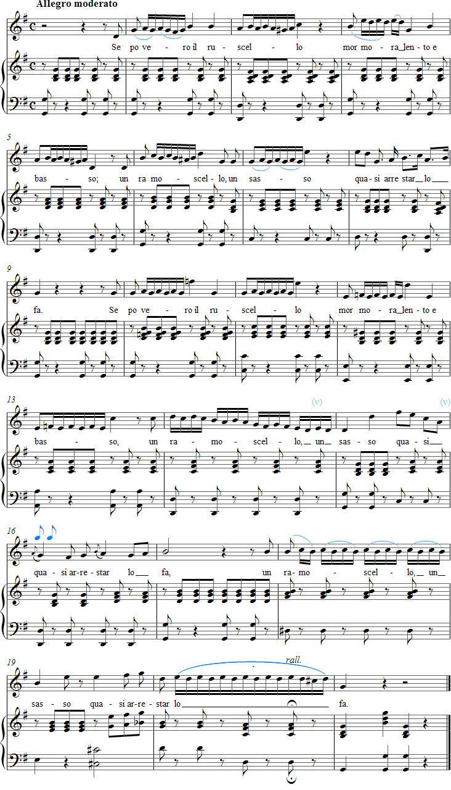

Vaccaj – Exercise 11
Listen to the recording
Sheet music

Exercise 11
Introduzione al trillo
Introduction to trills or shakes
low and slow,
the tiniest twig or stone
will bring it to a standstill.
Performance instructions
This preparatory trill exercise contains very short and simple trills. It is a study of the so-called mordent trill, which, according to Garcia, ends almost as soon as it begins.
Sieber says that short trills generally begin on the auxiliary note above the principal note, followed by an after-grace-note figure, as is appropriate for a mordent trill. The trill ends with a turn.
A trill beginning on the auxiliary note should also be introduced as a preliminary exercise, since it is the easiest to execute accurately.
The best examples of a short mordent trill occur in bars 2, 3, 5 and 6. They meet Sieber’s minimum requirement of two alternations between the two trill notes. In several other bars, Vaccaj dispenses with the after-grace-note requirement to allow a little more room for alternation between the notes. After-grace notes may, of course, be added where needed, for example in the short chain of trills in bar 14.
Vaccaj respects the varying stresses of the seven-syllable poetic metre relatively well by adapting the phrases to the demands of the text. At the same time, however, the trills and leaps disrupt the poem’s prosody on the words povero, mormora and ramoscello.
Practice suggestions
Replace the text with a suitable vowel or vowels and begin practising at a moderate tempo (quarter note approximately M.M. 72).
You may lightly accent the first note of each four-sixteenth-note figure.
Practise the mordent trill both legato and marcato, varying the dynamics if possible. In slurred articulations, think of a vowel on every note.
When singing without the text, you may breathe after the first beat in bar 15. In bar 20, breathe after the first eighth note so that you can enjoy the long fermata throughout the sixteenth-note figure and allow the trill to flow freely. Round off the final four thirty-second notes.
When singing with the text, you will eventually need to dispense with the breath in bar 20. In bar 15, it is best to breathe after the word quasi. Note that the comma in bar 6 also offers an opportunity to breathe.
Ideas for interpretation
The little babbling brook in the poem provides perfect inspiration for practising the trill.
Gradually increase the basic tempo. At a faster tempo, you can use ritenuto to paint the words lento and arrestar.
The meanings of basso (low) and mormora (murmurs) can be brought out by singing piano in bars 5 and 12.
Sing the poem’s four lines as one coherent whole for the listener.
The upward interval leaps in bars 3, 7, 10, 11, 13, 15 and 19 must not cause a large increase in volume. The intention is not to make fun of the smallness of the brook, twig and stone.
For the same reason, the pianist should play the right-hand chords tenderly.
Other remarks
A short appoggiatura is generally an excellent preliminary exercise for the trill.
According to Battaglia, Garcia believed that singing trills required natural talent. As an example, he mentions the great singer Giudetta Pasta, who supposedly never mastered trilling during her long career.
In fact, however, Garcia reports that Madame Pasta did succeed in learning a perfect trill through hard work. She demonstrated this after ten years of her career, on 15 November 1830, in an unforgettable performance of Rossini’s opera Tancredi.
Forshufvud, G. 1994. Con lieve fiato. Lärarhandledning till Nicola Vaccajs Metodo pratico. Göteborgs universitetet.